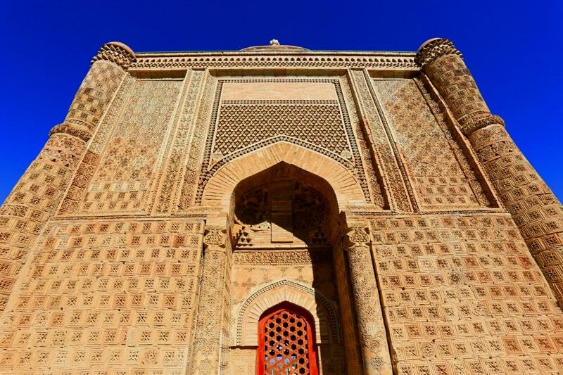
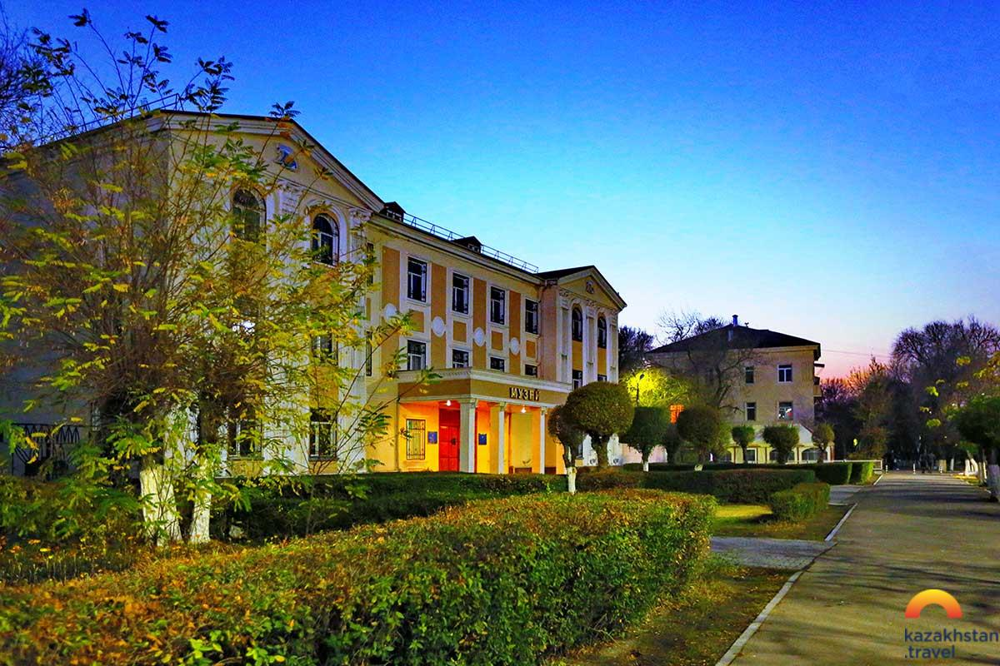
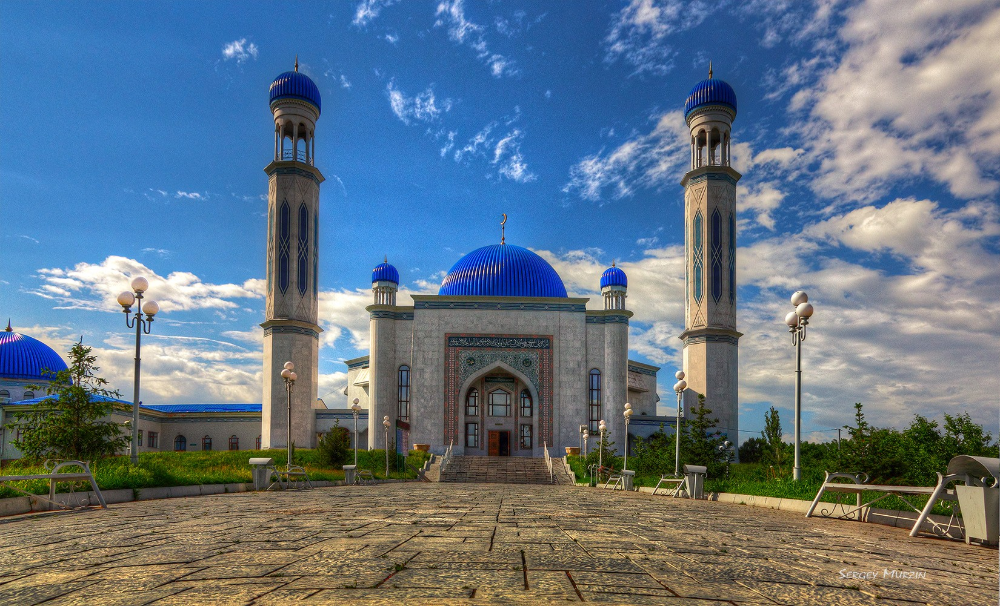
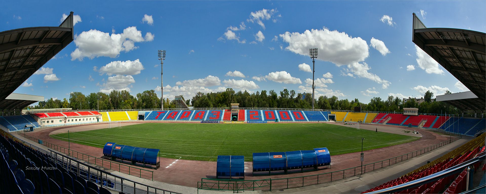

AYSHAH BIBI MAUSOLEUM
Just 10 miles outside Taraz, stands the beautifully-preserved and restored Ayshah Bibi Mausoleum. Built in the Kharakhanid era for the daughter of a Sufi Poet who was engaged to the ruler at the the time, visitors flock to this monument dedicated to love, to pray for children and happiness in its pretty surroundings overlooking the Taraz oasis.

BABADJA-KHATUN MAUSOLEUM
Dating back to the 11th century, Babadja-Khatun is unique in Central Asia for its distinctive umbrella-shaped, ribbed dome. Visitors come to explore its cavernous hall and to see the Arabic script on the wall that reads ‘The woman from the country of Babadji’.

REGIONAL MUSEUM
Celebrating the rich history of Taraz and its surrounding areas, the Regional Museum bustles with visitors year-round. The beautiful domed building houses ancient stone carvings; medieval pottery and paintings can be found in the rear courtyard, while the main hall is home to stuffed animals, local jewelry and a preserved yurt.

CENTRAL MOSQUE
The Central Mosque of Taraz Hibatullah at-Tarazi is recognized as the main attraction of Zhambyl region. This happened in 2011 during the summing up of the virtual national competition to determine the "seven wonders" located in the territory of the Zhambyl region. The building of the main mosque of Taraz was built in 2008, although the foundation stone was laid in 2003 by the President of the Republic of Kazakhstan N. A. Nazarbayev during another working trip to Taraz.

TARAZ CENTRAL STADIUM
The city’s stadium is home to its beloved football team, FC Taraz, who currently play in the Kazakh premier league, having been promoted from the first division when they won the cup in 2004. The city’s football fans and visitors alike regularly gather here for games.
